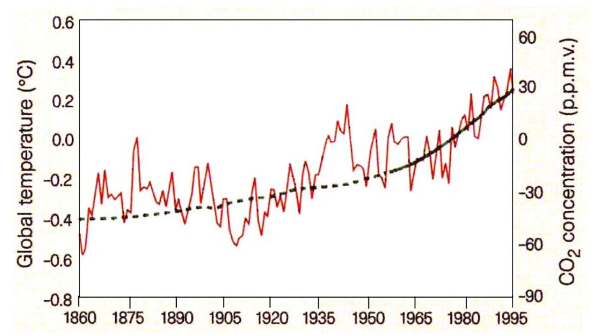
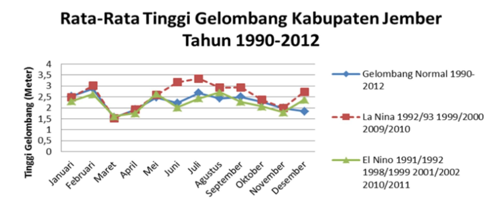

Krisis Hasil Produksi Perikanan di Indonesia: Mengungkap Dampak Perubahan Iklim yang Mengkhawatirkan
Latar belakang
Geografi pada dasarnya mempelajari hubungan timbal balik antara manusia dan lingkungannya. Hubungan itu terlihat jelas pada iklim. Iklim, yang oleh World Meteorological Organization (2013) didefinisikan sebagai rerata kondisi cuaca suatu wilayah dalam rentang sekitar 30 tahun atau lebih, dibentuk oleh faktor geografis seperti posisi lintang, keberadaan laut, pola angin, vegetasi, dan topografi. Sebaliknya, iklim yang berubah juga mengubah wajah geografis suatu wilayah, misalnya garis pantai yang bergeser karena es di kutub mencair dan muka air laut naik.
Perubahan iklim sendiri bukan isu baru. Pembahasan tentang meningkatnya karbon dioksida di atmosfer sudah muncul sejak 1980-an. IPCC (2013, 2018) menegaskan bahwa perubahan iklim terus berlangsung dan memengaruhi kesehatan, pangan, air, lingkungan, dan ekonomi, sedangkan WMO (2020) mencatat bahwa 2011 sampai 2020 merupakan dekade terpanas sejak pencatatan dimulai. Dampaknya bersifat global, tetapi yang dirasakan setiap wilayah berbeda, sehingga setiap wilayah perlu rancangan persiapan dan kemampuan adaptasi sendiri.
Indonesia berada di posisi yang rentan. Terletak di antara 6° LU sampai 11° LS dan 95° BT sampai 141° BT, Indonesia beriklim tropis, dikelilingi dan dipengaruhi lautan (iklim laut), serta dikendalikan angin muson yang membagi tahun menjadi musim kemarau dan musim hujan. Karena wilayahnya didominasi laut, perikanan menjadi salah satu sektor terbesar yang menopang kehidupan masyarakat pesisir. Dari sini muncul pertanyaan yang menjadi inti esai ini, yakni bagaimana perubahan iklim mengancam produksi perikanan di Indonesia?
Data yang digunakan
Project ini tidak memakai data primer. Seluruh bahan berasal dari literatur ilmiah dan laporan lembaga, ditambah dua grafik dari sumber tersebut yang dipakai sebagai bukti visual. Setiap sumber dipilih karena menopang satu langkah dalam rantai argumen, dari konsep iklim sampai dampaknya pada nelayan.
| Sumber | Jenis | Peran dalam Analisis |
|---|---|---|
| Clifford (2016); Johnston dkk. (2012) | Buku dan literatur geografi | Kerangka hubungan timbal balik manusia dan lingkungan |
| WMO (2013) | Glosarium meteorologi | Definisi iklim |
| IPCC (2013, 2018); WMO (2020) | Laporan ilmiah dan siaran pers | Bukti pemanasan global dan dekade terpanas 2011–2020 |
| Givoni (1998) | Literatur iklim | Karakter iklim tropis Indonesia |
| Roessig dkk. (2004); UNDP (2007) | Jurnal dan laporan lembaga | Kenaikan muka laut dan dampaknya pada tambak di Aceh |
| Listriani dan Roesa (2015); Mansur dkk. (2013) | Jurnal dan laporan penelitian | Studi kasus kebijakan dan perikanan di Aceh Besar |
| Kuo dkk. (2004) dan studi adaptasi nelayan Jember | Jurnal dan penelitian | Pengaruh La Niña dan El Niño pada gelombang dan operasi nelayan |
| Ren dkk. (2020); Pramono (2019); Wredaningrum dan Sudibyakto (2014); Faperta UGM (2015) | Jurnal dan artikel | Pendukung konsep iklim, model cuaca ekstrem, dan adaptasi perikanan |
| Grafik suhu global dan CO2; grafik tinggi gelombang Jember 1990–2012 | Gambar dari sumber sekunder | Bukti tren pemanasan dan variasi gelombang |
Metode
Esai ini memakai pendekatan kajian pustaka yang bersifat deskriptif dan kualitatif. Argumennya dibangun berlapis, dimulai dari konsep, naik ke bukti global, lalu turun ke konteks Indonesia dan kasus nyata di lapangan. Dua studi kasus dipilih karena mewakili dua jalur dampak yang berbeda. Aceh memperlihatkan dampak kenaikan muka laut pada tambak dan akses melaut, sedangkan Jember memperlihatkan dampak variabilitas iklim (La Niña dan El Niño) pada gelombang dan arus ikan.
| Tahap | Keterangan |
|---|---|
| 1. Kerangka konsep | Menempatkan iklim sebagai objek kajian geografi dan mendefinisikannya |
| 2. Bukti global | Merangkum laporan IPCC dan WMO serta tren suhu dan CO2 |
| 3. Konteks Indonesia | Menjelaskan iklim tropis, iklim laut, dan iklim musim di Indonesia |
| 4. Jalur dampak | Memetakan bagaimana perubahan iklim menekan sektor perikanan |
| 5. Studi kasus | Menguji jalur dampak pada Aceh dan Jember |
| 6. Sintesis | Menarik kesimpulan dan implikasi mitigasi serta adaptasi |
Hasil
Dalam kurun sekitar 50 tahun terakhir, suhu permukaan bumi dan kuantitas CO2 di atmosfer sama-sama naik. Grafik pada Gambar 1 menunjukkan keduanya bergerak ke arah yang sama selama rentang 173 tahun, dan kenaikannya menajam di bagian akhir. Peningkatan ini berdampak pada komponen akuatik bumi, termasuk laut tempat perikanan bergantung.

Posisi astronomis Indonesia membuatnya beriklim tropis, dengan suhu dan kelembapan tinggi sepanjang tahun serta dua musim. Kemarau dibawa angin muson timur dari Australia dengan curah hujan rendah, sedangkan hujan dibawa muson barat dari Samudra Hindia dan Pasifik dengan kelembapan tinggi. Wilayah laut yang sangat luas, yang diapit dua samudra besar, menjadikan suhu laut dan kelembapan udara di kawasan sekitarnya ikut stabil. Artinya, ketika laut berubah, hampir seluruh sistem iklim dan penghidupan pesisir Indonesia ikut berubah.
Dari literatur yang dikaji, dampak perubahan iklim pada perikanan tidak datang dari satu sebab. Ia bekerja lewat beberapa jalur yang saling menguatkan.
| Pemicu | Mekanisme | Dampak pada Perikanan |
|---|---|---|
| Pemanasan dan pencairan es kutub | Volume air laut bertambah, muka laut naik | Tambak ikan dan udang rusak, daratan pesisir hilang, akses melaut terganggu |
| Pola hujan tak menentu, cuaca ekstrem | Banjir dan kekeringan mengubah kualitas air dan keberadaan plankton | Pakan alami ikan berkurang, nelayan sulit menentukan waktu dan lokasi tangkap |
| Peningkatan CO2 di atmosfer | Pengasaman laut (ocean acidification) | Pertumbuhan dan reproduksi ikan serta organisme laut terganggu |
| La Niña dan El Niño | Gelombang tinggi, suhu permukaan laut naik, arus ikan berubah | Peluang nelayan melaut menurun |
| Gabungan semua jalur | Tekanan pada ekosistem akuatik sebagai tempat hidup ikan | Produktivitas perairan dan hasil produksi perikanan menurun |
Studi kasus Aceh
Menurut Roessig dkk. (2004), muka laut diperkirakan telah naik sekitar 0,1 sampai 0,3 m dalam satu dekade dan diproyeksikan naik 0,3 sampai 0,5 m, yang dapat menenggelamkan sekitar 1 juta km² daratan rendah. Di Aceh, kenaikan permukaan laut di pesisir menghancurkan tambak ikan dan udang sehingga produksi perikanan merosot (UNDP, 2007). Studi tentang kebijakan pemerintah daerah di Aceh Besar menambahkan sisi lain. Nelayan tidak bisa melaut saat air surut karena perahu tidak dapat melewati kawasan kuala. Pada saat yang sama, tekanan ekosistem menurunkan populasi ikan di laut, dengan pengaruh langsung pada fisiologi, perilaku, pertumbuhan, reproduksi, dan kematian ikan.
Studi kasus Jember
Kasus Jember memperlihatkan jalur yang berbeda. Penelitian adaptasi nelayan perikanan laut tangkap di sana menyatakan bahwa La Niña dan El Niño, yang terkait perubahan iklim, memengaruhi tinggi gelombang laut, suhu permukaan laut, dan arus ikan, sehingga kesempatan nelayan untuk melaut semakin kecil (Kuo dkk., 2004). Gambar 2 membandingkan rerata tinggi gelombang di Kabupaten Jember pada tahun 1990–2012 untuk tahun normal, La Niña, dan El Niño, dan memperlihatkan bahwa tinggi gelombang bergeser mengikuti fase tersebut.

Kesimpulan
Perubahan iklim mengancam produksi perikanan Indonesia lewat beberapa jalur sekaligus, yaitu kenaikan muka laut, pola hujan dan cuaca ekstrem, pengasaman laut, serta perubahan gelombang dan arus ikan. Kasus Aceh memperlihatkan kerusakan tambak dan terhambatnya akses melaut akibat naiknya muka laut, sedangkan kasus Jember memperlihatkan menyempitnya peluang melaut akibat gelombang dan arus yang berubah. Karena Indonesia adalah negara maritim dengan laut yang mendominasi wilayahnya, sektor perikanan menjadi salah satu yang paling terdampak.
Implikasinya jelas. Mitigasi dan adaptasi yang tepat dibutuhkan, dan tindakan nyata harus datang dari semua pihak, dari pemerintah daerah sampai komunitas nelayan. Langkah lanjutan yang paling berguna adalah menguji temuan ini dengan data produksi perikanan runtun waktu yang dibandingkan dengan anomali suhu permukaan laut dan fase ENSO, sehingga klaim tentang krisis produksi bisa ditunjukkan dengan angka.
← View other projects